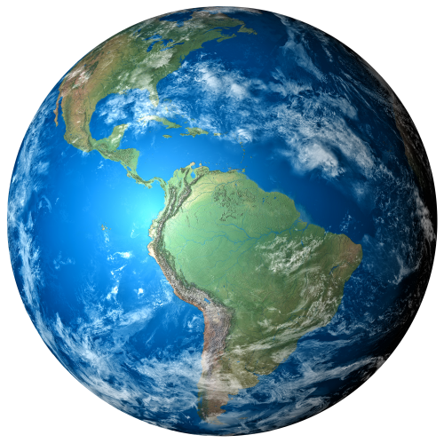

PLANETA TERRA
Terra é o terceiro planeta mais próximo do Sol. A sua formação ocorreu há bilhões de anos e é considerada um
planeta telúrico que possui sua estrutura interna dividida em: crosta terrestre, manto e núcleo. Além da
estrutura interna, há também a externa que corresponde à litosfera, hidrosfera, biosfera e atmosfera, que
são o que oferece as condições favoráveis para a existência de vida aqui.
Características:planeta rochoso com uma superfície sólida e dinâmica de montanhas, cânions, planícies e muito mais. A
maior parte do planeta está coberta de água.
Distancia do sol: Cerca de 149.600.000 km.
Diâmetro: 12 756,2 Km (diâmetro na linha do equador). O diâmetro dos polos é 43 Km menor.
Temperaturas: média: 14ºC; mínima: -89,2ºC; máxima: 57,8ºC.